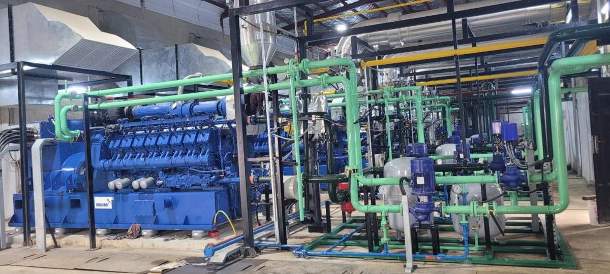
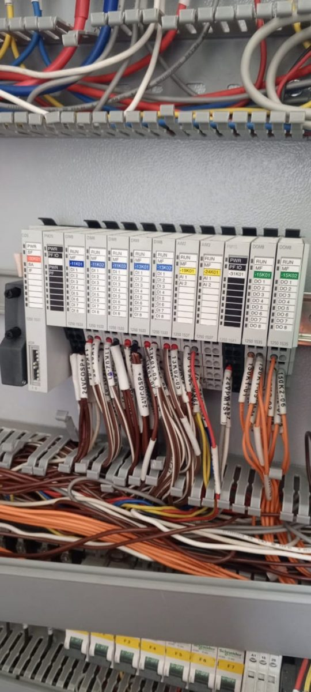
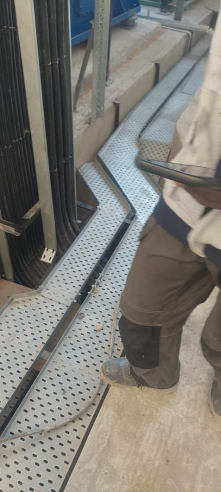
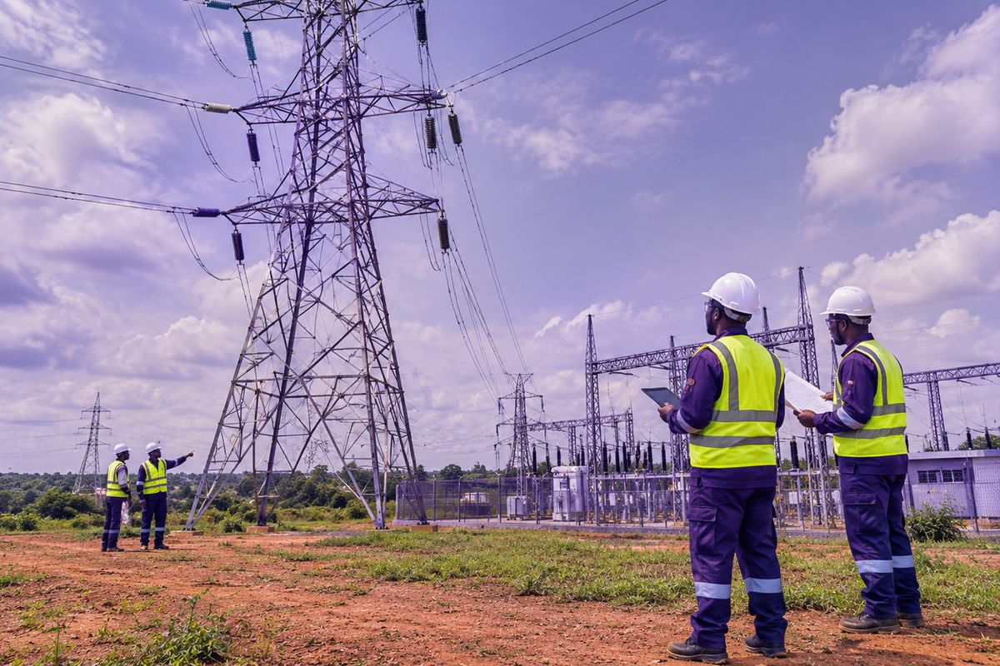
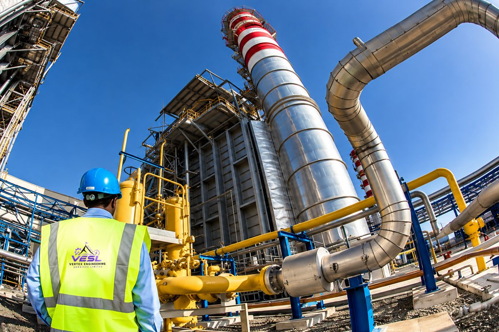
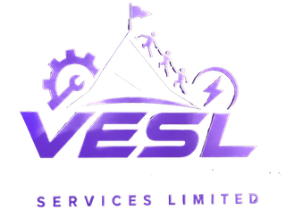

Welcome to Vertex Engineering Services Limited
Installation, commissioning, maintenance and technical training services. Powering progress through reliable engineering solutions.
About Vertex

Vertex Engineering Services Limited (VESL) brings engineering installation, mechanical and piping works, electrical installation, instrumentation, control systems, generator-related services, testing and commissioning together to support industrial projects.
Coordinated engineering and electrical delivery keeps equipment and services properly integrated, with clear coordination between disciplines, safe and orderly installation, inspection and testing, and support from project preparation through commissioning and handover.
Our services
Engineering, Electrical and technical services, from installation and commissioning support to workforce development.

Professional installation of three-way valves on high-temperature (HT) lines, supporting controlled routing and regulation of process flow within industrial piping systems.
The work may include reviewing approved piping and equipment drawings, confirming valve orientation and flow direction, preparing connection points, positioning and installing the valve, checking associated fittings and supports, and carrying out applicable inspection and leak or pressure testing in line with the approved project procedure. Correct installation helps the system achieve its intended flow-control arrangement and supports safe, maintainable operation. Final configuration and testing must follow the actual system design, valve manufacturer's instructions and approved project specifications.

Exhaust line insulation work involves applying suitable thermal insulation and protective cladding to exhaust ducting and associated components, in accordance with the equipment operating conditions and approved project specifications.
Properly installed insulation helps reduce unwanted heat transfer, protect personnel from hot surfaces, support temperature management and protect surrounding equipment and structures from excessive heat exposure. The work may include surface and access preparation, insulation material fitting, securing, joint treatment and external cladding, followed by visual inspection of coverage, fit and finish. Material selection and installation details must be confirmed against the actual exhaust temperature, design and project requirements.

Preparation and priming activities associated with the high-temperature (HT) and low-temperature (LT) lines serving a gas generator set (GENSET), as applicable to the installed system.
The work may include checking line identification and routing, confirming connections and valve positions, preparing the relevant circuits, carrying out the specified priming or filling procedure, checking for visible leakage and verifying readiness for subsequent inspection, testing or commissioning. HT and LT circuits perform different thermal-management duties and must be treated according to the actual genset design, manufacturer guidance and approved procedure.

Installation and integration of auxiliary systems associated with gas generator sets.
Depending on the actual genset configuration, auxiliary systems can include supporting pipework, pumps, valves, cooling and lubrication-related equipment, fuel-system interfaces and other equipment required for generator operation. The service involves installation coordination, checking equipment and pipework connections, verifying supports and routing, inspecting interfaces and preparing the relevant systems for functional checks and commissioning. Properly installed auxiliaries help support dependable operation, maintainability and effective servicing of the gas genset.

Industrial equipment offloading services involving the controlled unloading and handling of machinery, packaged equipment and project materials at site.
Activities may include offloading preparation, coordination of lifting personnel, review of the load and lifting arrangement, use of suitable lifting accessories, controlled crane-assisted lifting, movement and placement at the designated location, and coordination with site personnel. Safe offloading depends on verified load information, suitable lifting equipment, competent personnel, an appropriate lifting plan, exclusion zones and site-specific safety controls. All lifting operations must follow the approved lifting plan and applicable site procedures.

Gas GENSET control panel I/O card termination services covering the connection and organisation of control and signal wiring at the appropriate input/output modules.
The work may include identifying cables and cores, checking terminal schedules and approved drawings, preparing and terminating conductors, applying cable and core labels, and confirming that connections correspond with the intended digital or analogue input/output points. Where included in the approved scope, inspection, continuity checks, point-to-point verification and functional checks help confirm wiring integrity and correct signal routing. Accurate I/O termination supports dependable monitoring, control, alarm and interface functions for the gas generator system. All terminations and checks must follow approved drawings, panel documentation and manufacturer instructions.

Professional cable tray fabrication and installation services designed to provide safe, organised and reliable cable-routing infrastructure for industrial facilities.
Work may cover cable tray measurement, cutting, bending, shaping, fabrication, support arrangement and installation to suit specific project requirements. Properly aligned cable tray systems support effective cable management, improve accessibility for inspection and maintenance, and promote neat, structured routing of electrical and instrumentation cables. Workmanship, structural support, installation accuracy and conformity with approved engineering drawings and project specifications are prioritised.

Control Cable Laying services cover the organised routing, installation and preparation of control cables for industrial electrical, instrumentation and generator systems.
Work may include cable-route preparation, laying through designated trays and support systems, cable identification, segregation, dressing and securing to maintain neat, accessible and properly organised installations. The work focuses on protecting cable integrity, maintaining appropriate separation, supporting efficient troubleshooting and preparing cables for accurate termination and system integration. Activities should follow approved engineering drawings, project specifications and applicable installation requirements.

Practical, industry-focused learning to strengthen technical competence and improve work readiness.
Learn moreSectors
Upstream, midstream and downstream facilities, flow stations, gas plants, processing facilities and pipeline-related works.

Gas turbines, gas generators, auxiliary systems, balance-of-plant equipment and associated electrical and mechanical systems.
Plant equipment, process utilities, production systems, piping, electrical installations and maintenance support.

Engineering and technical support for eligible commercial, energy and infrastructure projects, based on approved scope and capability.
Our strengths
Plan work carefully and control risks before and during execution.
Hands-on installation, testing, commissioning and maintenance experience.
Approved procedures, inspection records and test documentation appropriate to the project.
Coordinate labour, equipment, materials and interfaces to support project targets.
Communicate clearly, manage interfaces and respond to project requirements.
Support local capacity through practical technical training and knowledge transfer.
Our process
The same five steps on every project, whatever the scope.

Talk to Vertex Engineering Services Limited about your scope, schedule and technical requirements.